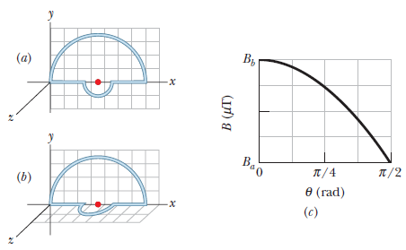

Maxwell’s equations, Four fundamental equations of electromagnetism


\(入射角(\theta_{B})+反射角(\theta_{r})=90\degree\)
\(n_1 sin(\theta_{B})=n_2 sin(\theta_{r})=n_2 sin(\frac{\pi}{2}-\theta_{B})\)
\(=n_2 cos(\theta_{B})\)
\(\frac{n_2}{n_1}=tan(\theta_{B})\)
\(\theta_{B}=tan^{-1}(\frac{n_2}{n_1})\)

Paramagnetic 順磁
Ferromagnetic 鐵磁
Ferrimagnetic 亞鐵磁
Antiferromagnetic 反鐵磁
The figure shows a wire ring of radius \(a=1.8cm\) that is perpendicular to the general direction of a radially symmetric,
diverging magnetic field. The magnetic field at the ring is everywhere of the same magnitude \(B=3.4mT\),
and its direction at the ring everywhere makes an angle \(θ=20\degree\) with a normal to the plane of the ring.
The twisted lead wires have no effect on the problem. Find the magnitude of the force the field exerts on the ring if the ring carries a
current \(i=4.6mA\).
\(dF_h=(iB cos\theta) ds\)
\(dF_y=(iB sin\theta) ds\)
\(F_v=iB sinθ\int ds = 2πaiB sinθ\)
\(= 2π(0.018m)(4.6×10^{−3}A)(3.4×10^{−3}T) sin20\degree\)
\(= 6.0×10^{−7}N\)
The current carrying wire loop in the figure (a) lies all in one plane and consists of a semicircle of radius 10 cm, a small semicircle with
the same center, and two radial lengths. The smaller semicircle is roated out of that plane by angle θ until it is perpendicular to the plane
(figure (b)). Figure (c) gives the magnitude of the net magnetic field at the center of curvature versus angle θ.
The vertical scale is set by \(B_a=10μT\) and \(B_b=12.0μT\).
What is the radius of the smaller semicircle?

$$B_i=\frac{\mu_0 i\phi}{4 \pi R} + \frac{\mu_0 i\phi}{4 \pi r}$$
$$B^2_f=B^2_z+B^2_y=(\frac{\mu_0 i\phi}{4 \pi R})^2 + (\frac{\mu_0 i\phi}{4 \pi r})^2$$
$$(\frac{B_i}{B_f})^2=\frac{[(1/R)+(1/r)]^2}{(1/R)^2+(1/r)^2}$$
$$\frac{B_i}{B_f}=12/10=1.2$$
$$r=R\frac{1\pm 1.2\sqrt{2-1.2^2}}{1.2^2-1}=$$ 2.3cm or 43.1cm
Since we require r < R then the acceptable answer is r=2.3cm
A Gaussian surface in the shape
of a right circular cylinder with end caps has a radius of 12.0 cm
and a length of 80.0 cm. Through one end there is an inward magnetic flux of 25.0mWb. At the other end, there is a uniform magnetic field of
1.60mT, normal to the surface, and directed outward.
What are the (a) magnitude and (b) direction (inward or outward)
of the net magnetic flux through the curved surface?
(a)
\(∮ \vec B\times d\vec A=0\)
\(∮ \vec B\times d\vec A =Φ_1+Φ_2+Φ_C\)
\(Φ_2=π(0.120m)^2 (1.60×10^{−3}T)=+7.24×10^{−5}Wb=+72.4μWb\)
\(Φ_C=−Φ_1−Φ_2=25.0μWb−72.4μWb=−47.4μWb\)
\(|ϕ_C|=47.4μWb\)
(b) The minus sign in \(Φ_C\) indicates that the flux is inward through the curved surface.
In above figure, a ray is incident on one face of a triangular glass prism in air. The angle of incidence θ is chosen so that the emerging ray
also makes the same angle θ with the normal to the other face. Show that the index of refraction n of the glass prism is given by
$$n=\frac{sin\frac{1}{2}(\psi+\phi)}{sin\frac{1}{2}\phi}$$
where \(ϕ\) is the vertex angle of the prism and \(\psi\) is the deviation angle, the total angle through which the beam is turned in passing
through the prism. (Under these conditions the deviation angle \(\psi\) has the smallest possible value, which is called the angle of minimum
deviation.)
\(θ_2+\alpha=90\degree\) and \(ϕ+2\alpha=180\degree\)
$$θ_2=90\degree−\alpha=90\degree−\frac{1}{2}(180\degree−ϕ)=\frac{ϕ}{2}$$
\(\psi=2(θ-θ_2)\)
\(\psi=2(θ-\phi/2)\)
\(θ=(\phi+\psi)/2\)
$$n=\frac{sinθ}{sinθ_2}=\frac{sin\frac{1}{2}(\phi+\psi)}{sin\frac{1}{2}\phi}$$
he function \(ψ(x)\) displayed in Eq. 38−27 can describe a free particle, for which the potential energy is \(U(x)=0\) in Schrödinger's
equation (Eq. 38-19). Assume now that
\(U(x)=U_0 = a\) constant in that equation. Show that Eq. 38−27 is a solution of Schrödinger's equation, with
$$k=\frac{2\pi}{h}\sqrt{2m(E-U_0)}$$
giving the angular wave number k of the particle.
$$\frac{d^2\psi}{dx^2}+\frac{8\pi^2m}{h^2}[E-U_0]\psi=0$$
$$\psi\rArr\psi_0e^{dx}$$
$$\frac{d^2\psi}{dx^2}=-k^2\psi_0e^{dx}=-k^2\psi$$
$$-k^2\psi+\frac{8\pi^2m}{h^2}[E-U_0]\psi=0$$
$$k=\sqrt{\frac{8\pi^2m}{h^2}[E-U_0]}=\frac{2\pi}{h}\sqrt{2m[E-U_0]}$$
The coil in the figure carries current i=1.88A in the direction indicated, is parallel to an xz plane, has 3 turns and an area of
\(3.78×10^{-3}m²\), and lies in a uniform magnetic field \(B=(2.36\hat{i}-2.77\hat{j}-4.88\hat{k})mT\).
(a) What is the magnetic potential energy of the coil-magnetic field system?
(b) What is the magnetic torque (in unit-vector notation) on the coil?
(a) By right-hand \(\vec{\mu}\) is in \(-y\) direction.
\(\vec{\mu}=(NiA)(-\hat{j})\)
\(=-(3)(1.88A)(3.78x10^{-3}m²)\)
\(=-(0.0213A\times m²)\hat{j}\)
The corresponding magnetic energy is
\(U=-\vec{\mu}\times \vec{B} = -\mu_y \times B_y\)
\(=-(-0.0213A \times m²) \times (-2.77 \times 10^{-3}T)\)
\(=-5.91 \times 10^{-5}J\)
(b) Using the fact that
\(\hat{j} \times \hat{i} = 0, \hat{j} \times \hat{j} = 0, and\hat{j} \times\hat{k}=\hat{i}\)
\(\vec{\tau} = \vec{\mu} \times \vec{B} = \mu_y B_z \hat{i} - \mu_y B_x \hat{k}\)
\(=(-0.0213 A\times m^ 2)(-2.36\times 10^{-3} T)\hat{i}-(-0.0213A \times m^2) (4.88\times 10^{-3} T)\hat{k}\)
\(= (10.4 \times 10^{-5} N\times m)\hat{i} +(5.03\times 10^{-5} N\times m)\hat{k}\)
.png)
.png)
.png)
.png)
.png)
.png)
.png)
.png)
.png)
.png)
.png)
.png)
.png)
.png)
.png)
.png)
.png)
.png)
.png)
.png)
.png)
.png)